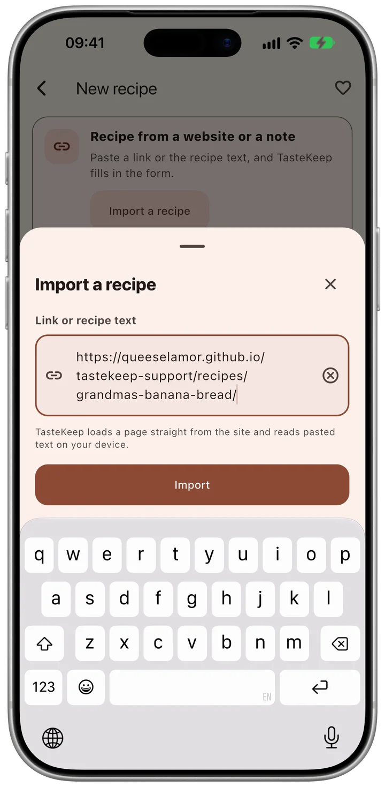
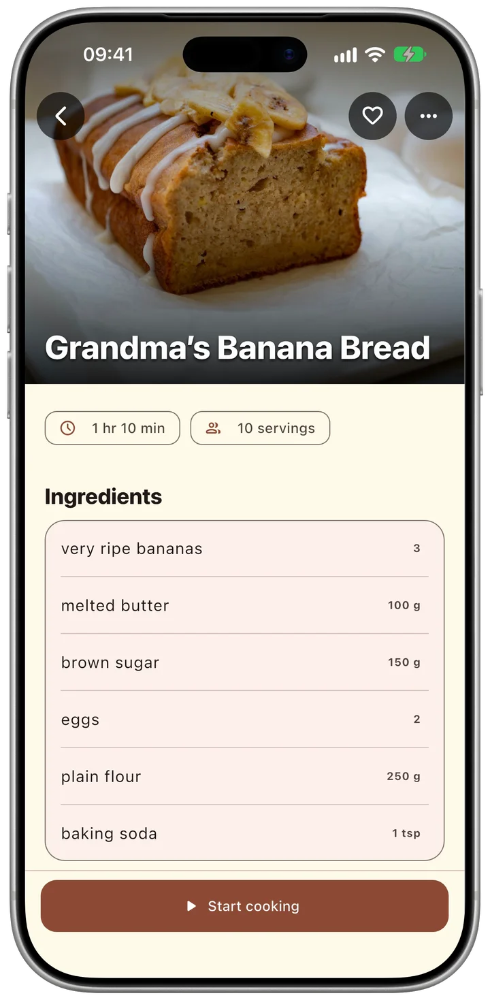

Paste a link, get the recipe
Found a recipe online? Paste the link into TasteKeep, and it fills in the title, photo, ingredients and steps.
Free for iPhone and iPad.
No account, no subscription.

How it works
-

1Paste the link
Copy the address of a recipe page and paste it into TasteKeep.
-
2
Check and save
TasteKeep fills in the form. You compare it with the site and tap Save.
-

3Cook from it
Open cooking mode and start a timer that stays on the Lock Screen.
Reading the recipe in Safari? Tap Share and choose TasteKeep.
Your recipes, in one private book
Free on the App Store. Pro is a one‑time purchase.